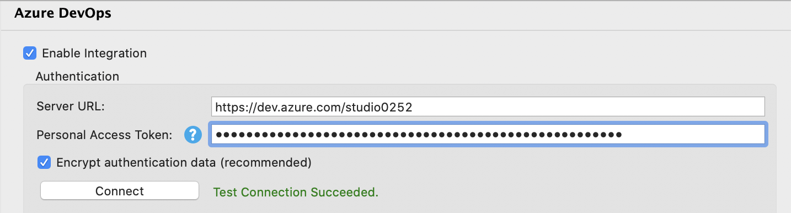
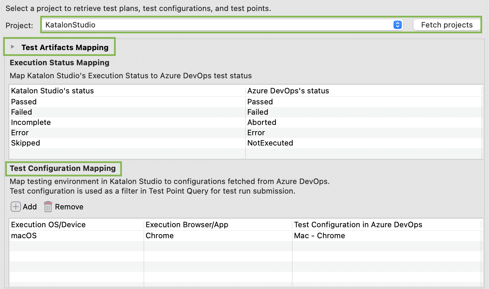
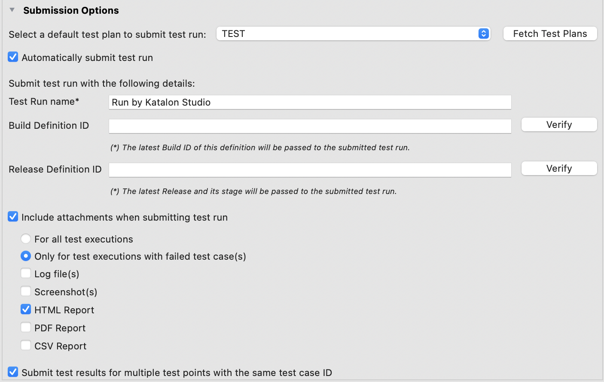

To retrieve your test artifacts and create new test results directly on Azure DevOps, you need to integrate and authenticate your project with Azure Server. Follow these steps:
- In Katalon Studio, go to Project > Settings > Integrations > Azure DevOps.
- In the opened dialog, check the Enable Integration box.
The Authentication area can now be edited.
- Enter your credentials. Your credentials are encrypted by default.
- Server URL:
https://dev.azure.com/{yourorganization} - Personal Access Token: your Personal Access Token. We recommend you create a Personal Access Token with full-access scopes. See Microsoft document: Use personal access tokens and Scopes.
- Click Connect. If the connection to the Azure server is successful, the Test Connection Succeeded line appears.

- After successfully authenticating your project with the Azure Server, in the dropdown list of Project, select an ADO project that you have access to.
To retrieve the latest projects list, click Fetch Project.
After you select a project, the Test Artifacts Mapping and Submission Option fieldsets automatically expand.
- Next, you need to map test artifacts between Katalon Studio and ADO.
- In the Execution Status Mapping, match test results in Katalon Studio with test outcomes in ADO.
- In the Test Configuration Mapping, you need to pair Execution OS/Device and Execution Browser/App in Katalon Studio with Test Configurations retrieved from Azure Test Plans. This step is to map test cases with test points in ADO for result submission.
You can Add or Remove one or more items in each section at your convenience.
- What is a test point?
- A test point is a unique combination of a test case, test suite, configuration, and tester. Test cases by themselves are not executable. When you add a test case to a test suite, a test point is generated. To learn more about test points, see Microsoft document: Execute tab.
- What is a test configuration?
- A test configuration is a combination of configuration variable values containing operating system information, browser, CPU type, database. For example, Windows 8 + 32-bit CPU or Windows 10 + 64-bit CPU. To learn more about the test configuration, see Microsoft document: Test different configurations.

- To submit test results to ADO, follow these steps:
- Select a test plan for the test run to be submitted. To retrieve the latest test plans list, click Fetch Test Plans.
By default, the Automatically submit test run is checked.
- Name the test run.
- Optional: If you want to add build and release information to test runs, specify Build Definition ID and Release Definition ID respectively (Release Definition ID was introduced in 8.1.0).
During runtime, Katalon Studio uses these pipeline definition IDs to get and pass the latest Build and Release to the corresponding properties of a test run.
- Optional: Decide what attachments to be sent together with a test run.
- Optional: With the associated test case ID and test configurations, more than one test point might be returned. These test points share the same test case ID and test configurations, but can still differ depending on the test suite and Tester. In this case, to decide whether Katalon Studio submits test results regardless of the number of test points returned, select Submit test results for multiple test points with the same test case ID.

- To save your settings, click Apply and Close.